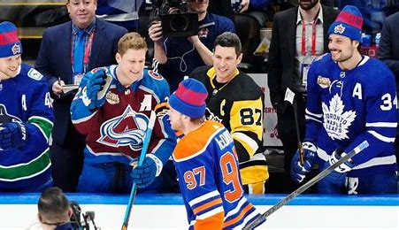

The National Hockey League (NHL) has become more talent filled every season with emerging stars. While every player in the NHL is great and full of talent I wanted to focus on analyzing the best of the best. As a hockey player myself and advid fan of the NHL the following information provided will be who I believe are the top NHL players from the previous 2023-2024 season. The new generation of talent and along with skill has made the game so much faster each year, the players I've selected are the best of the best. 
Sidney Crosby is one of the most well known names when it comes to hockey and there's a reason for that. Drafted first overall by the Pittsburgh Penguins in 2005 and he's never looked back since. In the 2023-2024 season he continued his consistent play at an elite level posting 93 points. While he is getting into the later years of his career, he's been nothing short of spectacular every season. A true veteran of the league, he's one of the most decorated hockey players when it comes to accolades as well. The current captain of the Pittsburgh Penguins has three stanley cups to his name along with multiple IIHF gold medals for his home country Canada. While he may be old, his ever-lasting impact on the game and in the NHL is hall of fame level.